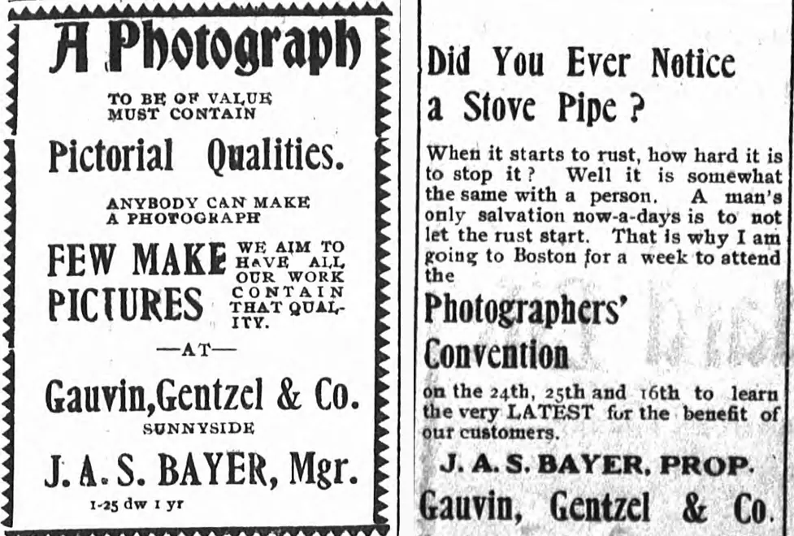
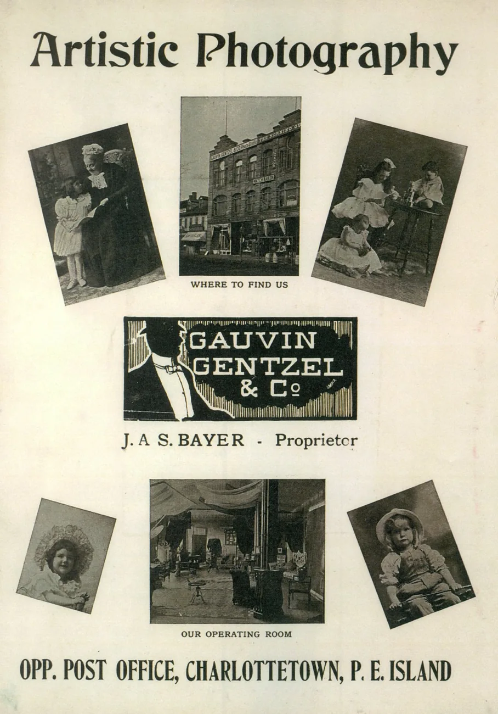
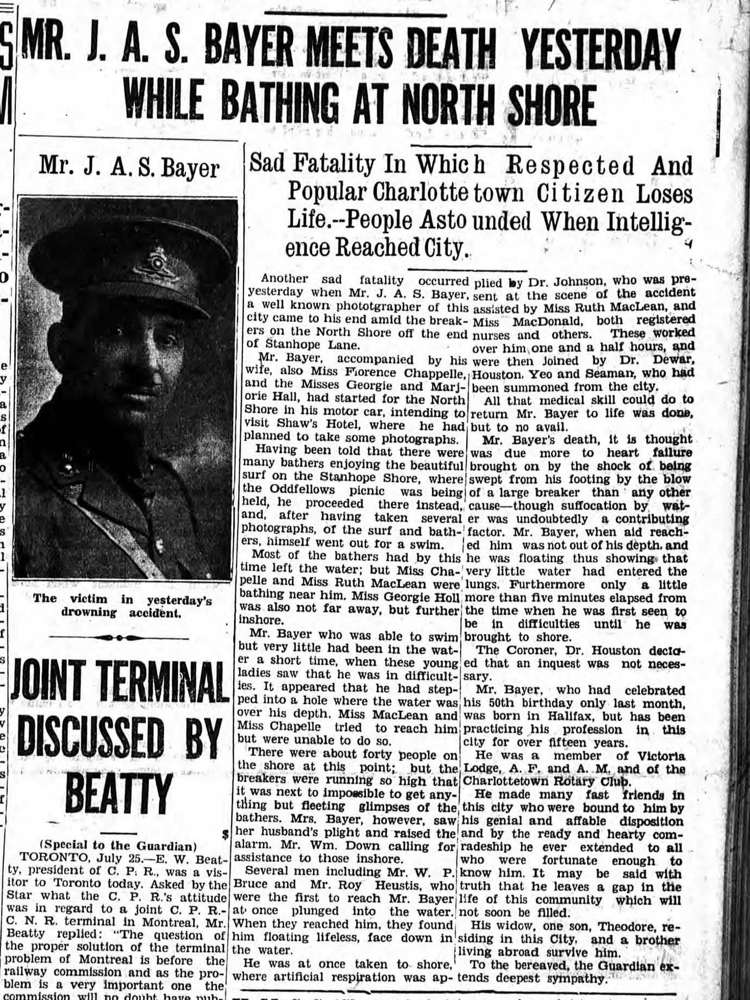

J. A. S. Bayer, Charlottetown Photographer
How does a Charlottetown photographer go from three postcard views to a place all his own in a collection? In the piece I started writing in 2017, three was the number of views I then knew J. A. S. Bayer to have published. Then an antiques dealer I knew sent me pictures of a parade, a group on the steps of Province House and four gentlemen in a horse-drawn carriage. Today I can pull up 77 catalogue records that carry Bayer’s name as photographer. Some are different prints of the same photograph. Even so, it’s a long way from three.
The carriage has its own story here. This one belongs to the man who was there with a camera. His name turns up in unexpected places, from the foot of a golf picture to the side of a fox train. To find him in Charlottetown for the first time, the place to look is a shop window.
A Halifax photographer in a Charlottetown window
The 1897 Halifax directory lists James A. S. Bayer as a photographer boarding at 3 Waterloo. On his later military papers he supplied the names behind those initials, James Alexander Shaw Bayer, and his birthplace and date, Halifax, July 1, 1878. He was already earning a directory entry as a photographer in his teens.
On April 29, 1901, the Charlottetown Guardian told readers that Westlake Brothers had sold their Charlottetown studio to a Halifax firm. Fred Westlake intended to spend a month in Toronto before taking charge of branches at Alberton and Souris. A. G. Westlake hoped to work for Kodak in Rochester. The notice made rather a mess of the purchasers’ names. They were Gauvin & Gentzel. George Gauvin and Adolphe Gentzel had built their partnership in Halifax, and the firm would eventually extend as far west as Winnipeg. In Charlottetown they had acquired an existing studio, complete with a local name to succeed. The Manitoba Historical Society on Gauvin and the partnership
By July 23, 1901, Islanders could see the firm’s work in G. G. Jury’s window. The Guardian commended the display and named the man responsible, “Mr. Bayer the manager of the studio.” He had just turned twenty-three. We may never get the date of the crossing that brought him here from Halifax, but that clipping puts him at work in Charlottetown a full five years before the 1906 postmark on my golf card.

Bayer’s own advertisements tell us when his title changed. On January 25, 1904, he was still signing himself manager. By August 18 the Guardian called him proprietor and reported that he was going to Boston for the Photographers’ Convention of New England. An advertisement in the August 29 paper even explains why he wanted to go. A stovepipe rusts if you give it a start, he told his customers, and much the same thing could happen to a photographer. He wanted to see the latest work. He signed that advertisement as proprietor of Gauvin, Gentzel & Co. On August 30 the paper confirmed that he had attended. More than a thousand professional photographers gathered at Mechanics Hall, it reported, for three days including instruction from the rudiments to advanced work.


Owning the business and putting his own name over it were separate steps. On March 8, 1907, he was still advertising Gauvin, Gentzel & Co. in the Guardian Building. On June 3 readers saw a much shorter invitation to call on “BAYER, Photographer.” The two advertisements show the names he was using that spring. By 1909 his own business is documented at 127 Grafton Street, where young Oliver Cleveland Craswell was learning the trade. A studio advertisement preserved in my papers gives directions more simply, opposite the post office. In the photograph of the building you can actually make out the sign above the upper windows. Compare the March and June 1907 advertisements



What Charlottetown bought from him
The little view of the Belvedere Golf Links already carried the credit “Photo Bayer” when someone sent it through Charlottetown on March 13, 1906. There is a pavilion beyond the golfers and plenty of white margin around the printed picture. Turn it over and someone has found exactly the right use for it, asking the recipient, “Do you play golf?” In a tennis photograph, the camera has come up to the court. A player in white occupies the foreground and the shadows run across the playing surface. This one carries “Bayer Photo” right down at the edge. The person who mailed it in June 1914 had a different sporting afternoon to send. Belvedere and the golfer’s question, 0182 · The tennis court, 0134

One of my favourites combines three kinds of professional work on a single card. There is a view from the back of Zion Church looking up the centre aisle, a separate photograph of the exterior and an oval portrait of the Rev. G. E. Ross. On February 10, 1908, H. S. Gray sent it to North Wallace, Nova Scotia, explaining to a friend that this was the writer’s pastor and church while attending college in Charlottetown. We know why this copy was chosen. Gray wanted someone at home to meet the minister.
Six months later Bayer found a way for a crowd to take its own picture home. During the Odd Fellows’ August convention he photographed the group on the steps of the Provincial Building and followed the procession through Charlottetown. The set included sixteen numbered postcard views and the unnumbered carriage. A larger mounted photograph bore the Bayer imprint that the individual parade prints lacked. On August 15 the druggists Johnson & Johnson advertised copies of the procession and the group, with a sample card in their window. The photographs, their attribution and their route into a lodge member’s hands can all be traced. The carriage, the mounted group and W. Stetson Rogers
The fox cards offer another reason to hire him. In the view of the train carrying silver foxes from Tignish, someone took the trouble to identify three of the men in the photograph. The caption supplies the company name. James Paton signed the back and added his office, director. On a different ranch Bayer photographed a fox family against wire netting. The caption names W. K. Rogers and makes an ambitious claim about the size of his breeding operation. On the train card a buyer could take home the faces of the company officers. On the ranch card the claim about the breeder travelled with the foxes. The Rogers foxes, 2939 · Bayer’s photographs of the fox train
Two addresses and two careers
By 1924–25 you could find Bayer at 163 Great George Street, and Craswell, trading on his own account, at 137 on the same street. A collection of 37 large glass negatives at the provincial archives brings the two photographers together again. Its subjects include Prince of Wales College classes and debating teams, City Council and Island athletes. In another collection, Saint Dunstan’s University credits Bayer Photos with the individual portraits of seventeen faculty and graduates for the class of 1928. A postcard collection catches only part of the working week of a man who made his living taking Islanders’ pictures. The Bayer and Craswell negatives · Saint Dunstan’s class of 1928
One of the most personal records of his working life is an army form. In 1918 Bayer gave his current address as Fort Ives, Halifax, his occupation as photographer, and his next of kin as his wife, Cora Belle Bayer, at 8 Euston Street, Charlottetown. He recorded fourteen years of active militia service and signed as a captain. Set it beside his quiet Bonshaw picture, posted on August 3, 1914. On the reverse Annie tells her sisters that men bound for Petawawa had been turned back and were home again. The caption on the front belongs to the photographer. The account of those anxious hours belongs to Annie. Read Bayer’s signed declaration · Bonshaw and Annie’s letter, 2970

The Stanhope photographs
On July 25, 1928, Bayer set out by car with his wife, Florence Chappelle and Georgie and Marjorie Hall. They meant to go to Shaw’s Hotel, where he planned to take pictures. On the way he heard about the surf and the bathers at the Odd Fellows’ picnic at Stanhope. He went there instead, took several photographs and went into the water himself. Shaw’s appears in the collection on a card issued by Carter & Co. It lets us see the destination he had in mind that morning. The photographs he made at the picnic are another matter. I haven’t identified one. Shaw’s Hotel across the water, 0528
The next morning the Guardian put Bayer’s portrait on the front page. The trouble began offshore at the end of Stanhope Lane. The breakers were high enough that people on the beach could see the swimmers only in glimpses. Florence Chappelle and Ruth MacLean tried to reach him. His wife saw his difficulty and raised the alarm. W. P. Bruce and Roy Heustis were among those who reached him and got him ashore. Dr. Johnson and the nurses worked to revive him. He was fifty years old.


The beach and the drowning are documented. The exact cause of his distress is harder to recover. The reporter considered a hollow underfoot, a heavy breaker and possible heart failure. The coroner, Dr. Houston, decided against an inquest. A rip current is more precision than the evidence allows. Two days later the paper reported the funeral from Bayer’s home to the People’s Cemetery. His fellow Masons and members of the Rotary Club were among the mourners.
W. A. and W. F. Flett continued the business under the name The Bayers Studio. That matters when another “Bayer” photograph comes to light. The studio name went on working after James died. Of all the things that have come out of the carriage picture, the detail I keep coming back to is who was at Stanhope. Twenty years after Bayer made those pictures that Odd Fellows could order from a drugstore window, it was news of another Odd Fellows’ gathering that made him change his plans and take out his camera.